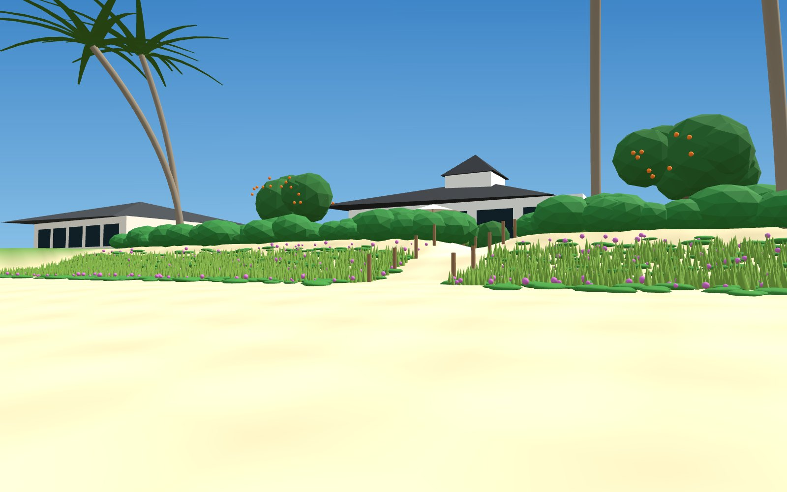

Laulea Living Shoreline
A soft, planted shoreline for the eroding beachfront at 461 Laulea Place. A sand berm and vegetated foredune rebuild the beach in front of the bank. A low planted dune on the lawn holds back storm overwash. Native coastal plants, shade trees and a sand path make it a place to spend time. No walls or rocks, so it fits Hawaiʻi's ban on private shoreline hardening at sand beaches.
Before and after
Drag across each image. These are renders of a 3D model built from the August 2023 lidar of your lot: real ground heights, the real bank position and the real house setback. The plants and buildings are simplified shapes. A landscape architect's illustrations would show the finished look in more detail.


TodayAfterWalk around the model
Drag to orbit, pinch or scroll to zoom.
Five zones from the water to the house
Section through 461 (transect 599)
heights in m above mean sea levelToday's ground from the 2023 lidar, lowered at the toe to match your November photos. The designed surface is drawn over it. Vertical scale exaggerated 3×.
Plan
34 m frontage · north is up-left (beach faces 350°)Schematic, not to exact scale. Final layout follows the certified shoreline survey.
How the design was chosen
The storm model from the Shoreline Lab ran 1,200 combinations of lawn-dune height, starting sand volume, top-up volume and interval, and coir toe protection. Each was tested against 50 years of real Pauwela buoy swells and Kahului water levels, with sea-level rise to +0.98 m by 2100. The model is calibrated to the measured 0.49 m/yr retreat at 461. Of the 492 designs that held the bank within 1 m through 2076, this one is the cheapest that still holds when swells are 15% bigger and the sea rises 1.5 m by 2100.
Bank retreat toward the house
Stress tests of the recommended design
| Scenario to 2076 | Bank retreat |
|---|
Coir envelopes were tested too. On this high-energy north shore the model gives them almost no benefit for their cost, so they are optional. Add them only if OCCL or your engineer wants a toe marker under the sand.
Zero means the sand berm absorbed every simulated storm before waves reached the bank. That depends on topping up on schedule: skip top-ups and the berm thins, and the bank starts retreating again.
| Option | What it includes | Bank reaches house | Bigger swells + 1.5 m sea rise | Build cost | 50-year cost* |
|---|
*Present value at 3%: build cost plus top-ups, planting care and monitoring for 50 years.
What goes into it
Sand specification
- Type: calcareous (carbonate) beach-quality sand matching the native beach in grain size, colour and composition, as OCCL requires.
- Grain size: median within about 20% of the native beach sand, set by lab tests. Fines (passing #200 sieve) under 5%, no gravel, clay, debris or organics.
- Quantities: 1,500 yd³ on the beach and foredune (about 100 truckloads) plus about 92 yd³ for the lawn dune. Then 250 yd³ every 3 years.
- Source: an approved inland Maui supplier; Sugar Cove used screened Grade A Maui dune sand. Maui County has restricted Central Maui inland sand mining, so lock in a source early.
Other materials
- Path edging: naturally rot-resistant or recycled-plastic posts at 1.5 m, with 19 mm manila rope.
- Sand fencing: temporary wooden slat fence on the berm for the first 1–2 years, to trap wind-blown sand while plants establish.
- Irrigation: temporary surface drip on a timer for 12–18 months, then removed. The exposed PVC in the bank is cut off and rerouted inland.
- Coir (optional): sand-filled coir envelopes buried in the foredune toe, if your engineer and OCCL want them.
- Excluded: rock, concrete, gabions, and permanent geotextile or plastic bags.
Plant palette (about 320 m²)
Native coastal species suited to salt spray, wind and sand burial. Order 6–9 months ahead from a native-plant nursery; most growers contract-grow ʻakiʻaki plugs. Plant at the end of summer with drip irrigation, before the first big swells, so roots establish over the wet season.
What it costs
| Item | Low | High |
|---|
Order-of-magnitude estimate in 2026 dollars for planning only. Sand is costed at $150–250/yd³ delivered and placed; Hawaiʻi sand moves typically cost $100–200/yd³ before small-job premiums. Get contractor quotes once the engineer's drawings exist. Sand price and supply are the biggest uncertainty.
Steps and schedule
- Set two fixed survey points (a house corner and a buried post); tape to the bank edge monthly and after each big swell.
- Cut and cap the exposed irrigation pipe; reroute it landward.
- Keep people off the bank face. Don't add or move rocks.
- If the bank comes within about 6 m of the house, ask OCCL about temporary emergency measures.
- Certified shoreline survey and topographic beach profile.
- Hire a Hawaiʻi-licensed coastal engineer to turn this concept into stamped drawings and confirm volumes.
- Sand sampling and grain-size tests of the native beach; identify a sand source.
- Archaeological assessment for SHPD.
- DLNR-OCCL Small-Scale Beach Nourishment, Category II, for 1,500 yd³ plus maintenance top-ups. It needs a Chapter 343 environmental determination and agency and public comment.
- Maui County Planning: SMA assessment and shoreline-setback approval for the lawn dune, path and planting.
- Order plants for contract growing as soon as the permits look likely.
- Mobilise through your lot (lawn protection mats), with the archaeological monitor present.
- Build the lawn dune and shape it to 0.6 m with a 1:2.5 face and 1:4 back.
- Place beach sand against the bank, burying the scarp at a 1:3 foredune slope, then grade the +2.0 m berm.
- Optional coir envelopes in the foredune toe. Sand fencing on the berm.
- Install drip irrigation, then plant from the dune crest down to the foredune.
- Lay the sand path with rope-and-post edging, and plant the kou trees.
- As-built survey and photos for OCCL.
- Water through the first 12–18 months; replace losses after the first winter.
- Hand-weed monthly in year one, quarterly after.
- Remove sand fencing once plants hold the surface.
- 250 yd³ of sand under the permit's maintenance volume, placed in the calm season.
- Top up early if the berm gets narrower than 4 m or a new scarp more than 0.5 m high appears.
- Annual profile survey and photo report; re-run the Shoreline Lab model with each survey.
How it fits the rules
| Requirement | How the design meets it |
|---|---|
| HRS 205A (Act 16, 2020): no private shoreline hardening at sand beaches | No walls, revetments, rock or concrete. Sand, plants and optional biodegradable coir only. |
| Small-Scale Beach Nourishment rules (DLNR-OCCL) | Category II volume, compatible sand, maintenance volumes, monitoring and reporting. |
| Maui SMA rules and shoreline setback (2024 update) | Lawn dune and planting are landscaping and dune restoration in the setback, with County review. No new fixed structures in the setback; the loungers are movable. |
| Shoreline location | Planting is not used to move the certified shoreline seaward. |
| Historic preservation (HRS 6E) | SHPD review and archaeological monitoring during earthwork. |
| Unauthorised boulders | Left in place pending OCCL direction. Their removal can be folded into the OCCL application if OCCL agrees. |